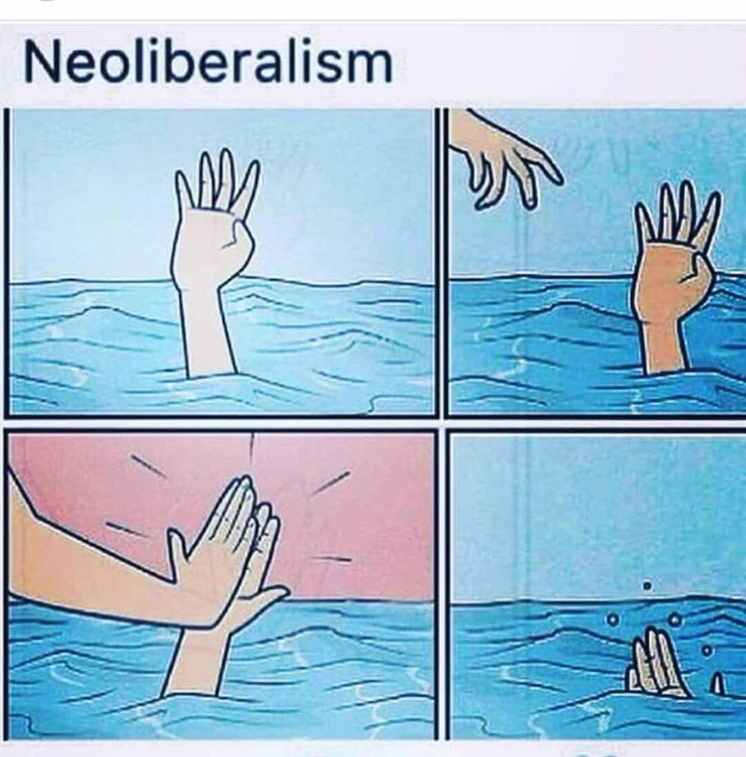

Visuel satirique relayé
« Neoliberalism ». Quatre cases pour une satire
Date indiquée par Facebook · 13 juillet 2018
Repères éditoriaux
Nous avons relayé ce dessin en quatre cases. Une personne tend la main en train de se noyer. Le geste qu’elle reçoit se résume à une tape dans la main. Le titre donne son sens à cette satire du néolibéralisme.

Sources
Archive rouge · document diffusé sur Facebook · AR-0002-FB-02101
À lire aussi · MEDEF, salariés et LREM dans un montage satirique